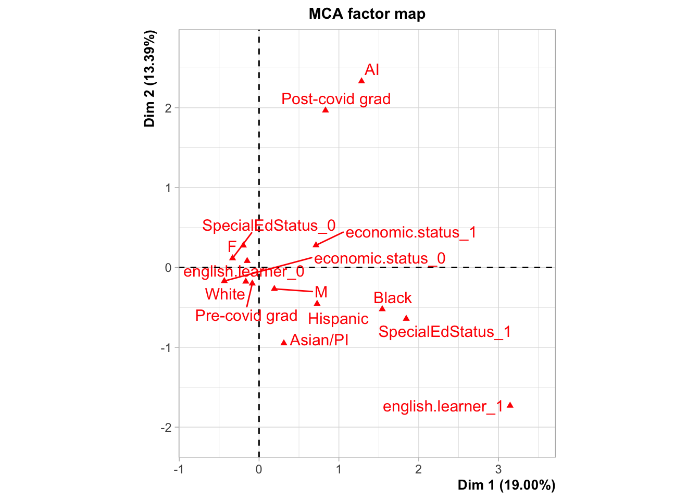
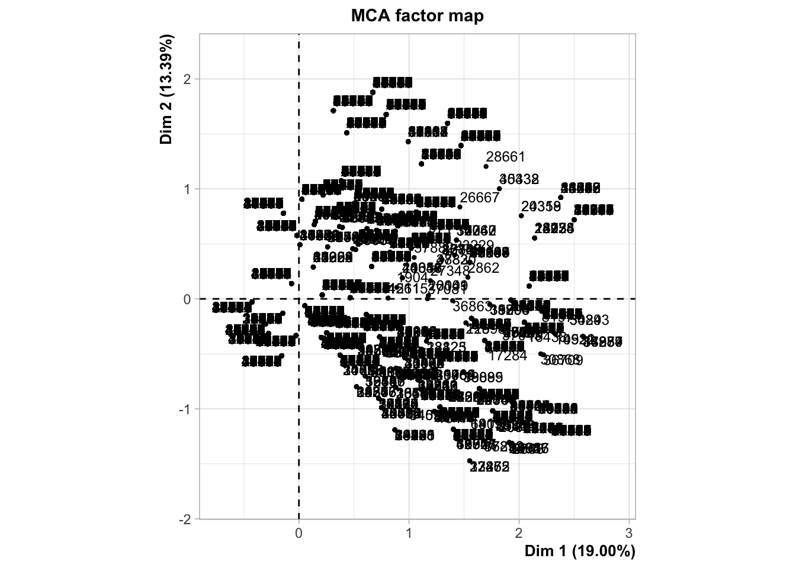
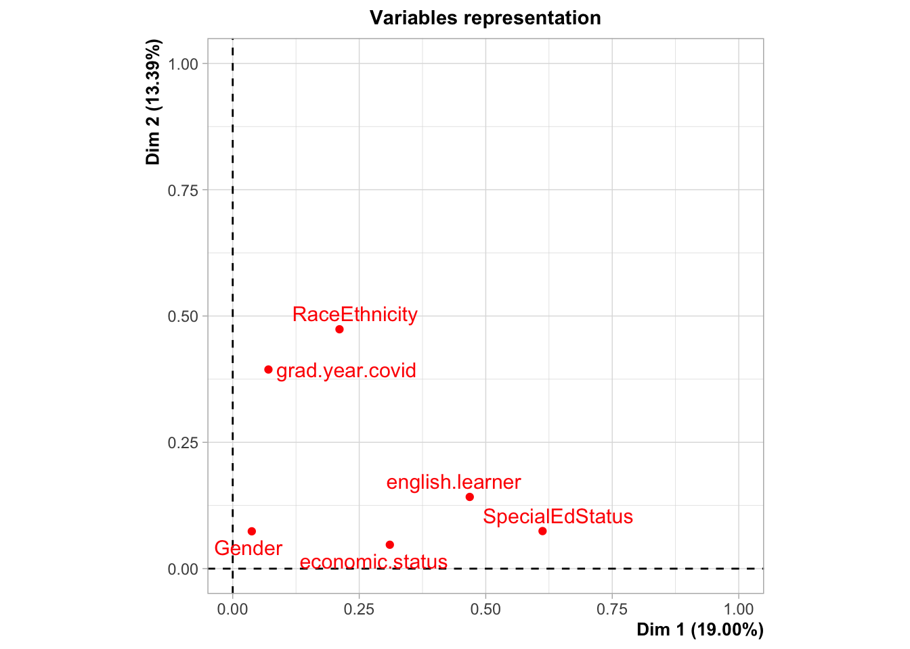

Multiple Correspondence Analysis
The purpose of multiple correspondence analysis is to examine any patterns among the independent variables with the goal of eliminating variables that are redundant - essentially two variables that are explaining the same thing. This type of analysis is not meant to confirm any predictions, but rather explore the data and make decisions on what data should be included in the prediction model.
Independent variables
The master dataset is composed of 49,743 rows. Each row represents an individual that graduated (StatusEnd = 8 or 9) from a high school located in EDR 3 between 2008 and 2023.
The master dataset is also composed of 112 columns. Columns mainly represent various socio-economic, demographic, and educational career characteristics of the indivdual as well as a few characteristics of the high school geographic from which they graduated (i.e. county unemployment). The variables for each individual is composed of a mix of categorical and numerical values. In this analysis, we will only be exploring categorical data.
Here is a list of all the categorical variables with a description of each.
- Demographics
- Grad year: this is a value representing each year starting with 1 representing 2008 and 16 representing 2023.
- grad.year.covid: this is a value representing whether the individual graduated high school before 2020 or after 2021.
- Pre-covid grad
- Post-covid grad
- Gender:
- M = male
- F = female
- RaceEthnicity:
- AI = American Indian
- Asian/PI = Asian or Pacific Islander
- Black = African American
- Hispanic = any race any Hispanic or Latino
- Unknown = unknown race or ethnicity
- White = Caucuasian and not hispanic
- High school characteristics
- Dem_Desc: the RUCA category of the high school from which the individual graduated.
- edr: we will not be using this variable since there is only one EDR in this region.
- High school enrollment
- LimitedEnglishProficiencyIndicator:
- Y = identified as having limited english proficiency at some point between 10th and 12th grade, otherwise N.
- HomelessIndicator:
- Y = the individual was identified as homeless at any point between 10th and 12th grade, otherwise N.
- economic.status:
- 1 = the individual was eligible for free or reduced lunch (codes 1,2,4,5) at any point between 10th and 12th grade, otherwise 0.
- pseo.participant:
- 1 = the individual participated in a PSEO course sometime between 10th and 12th grade, otherwise 0.
- SpecialEdStatus:
- 1 = the individual required special education services at some point between 10th and 12th grade, otherwise 0.
- non.english.home:
- 1 = the individual was identifed as having English as not the primary langauge spoken at home between 10th and 12th grad, otherwise 0.
- english.learner:
- 1 = the individual was identified as an “english learner” at least one time between 10th and 12th grade, otherwise 0.
- LimitedEnglishProficiencyIndicator:
- High school accomplishments
- took.ACT: whether an indiviual took the ACT exam
- Yes
- No
- ap.exam:
- 1 = the individual took an AP exam at some point,
- 0 = the individual did not take an AP exam.
- cte.achievement: three indicators with
- “CTE concentrator or completor” being one,
- “CTE participant” meaning they took a CTE course but was not a concentrator or completor, and,
- “No CTE” meaning they didn’t take a CTE course
- sat.taken:
- 1 = individual took the SAT at some point between 10th and 12th grade, otherwise 0.
- took.ACT: whether an indiviual took the ACT exam
- Post-secondary
- attended.ps.within.first.year.hsgrad: the individual attended a post-secondary institution within the first year of graduating high school.
- Attended PS within first year
- Atteded PS but not within first year
- Never attended PS
- attended.ps:
- Yes = the individual attended a post-secondary education institution, otherwise No.
- ps.grad: whether the indiviual graduated from a post-secondary institution
- ps.grad.InstitutionSector: the institution sector of the post-secondary school from which an individual has graduated.
- 1 - Public, 4-year or above
- 2 - Private not-for-profit, 4-year or above
- 3 - Private for-profit, 4-year or above
- 4 - Public, 2-year
- 5 - Private not-for-profit, 2-year
- 6 - Private for-profit, 2-year
- 7 - Public, less-than 2-year
- 8 - Private not-for-profit, less-than 2-year
- 9 - Private for-profit, less-than 2-year
- 10 - multiple sectors (if attended multiple institutions)
- 99 - Sector unknown (not active)
- “Never attended ps” = the individual never attended a post-secondary institution
- “Did not grad” = the individual attended a post-secondary institution but did not graduate.
- highest.cred.level: an identifier of the highest credential earned by the PersonID. The categories are;
- Less than associate degree
- Associate degree
- Bachelors degree
- Higher than bachelors degree.
- attended.ps.within.first.year.hsgrad: the individual attended a post-secondary institution within the first year of graduating high school.
Frequencies
First, lets check to see there aren’t any variable categories with very low frequencies which can distort the analysis.
The tables below shows there are a few to be concerned about.
- english.learner: There are only 1,276 individuals requiring more English classes.
- LimitedEnglishProficiency: There are only 55 individuals in this category.
- non.english.home: There are only 236 individuals in this category
- HomelessIndicator: There are only 379 individuals that indicated that they were homeless at one point between 10th and 12th grade.
- sat.taken: Only 459 have taken the SAT
- ps.grad.Institute:
- Only 57 went to a 3 - private, for-profit 4-year or above
- Only 15 went to a 6 - private, for-profit 2-year
- Only 56 went to a 9- private, for-profit less-than-2-year
- There are 0 that attended the following
- 5- Private not-for-profit, 2-year
- 7 - Public, less-than 2-year
- 8 - Private not-for-profit, less-than 2-year
Due to these low frequencies, I’m going to do the following;
- english.learner: keep for now
- LimitedEnglishProficiency: eliminate from analysis
- non.english.home: eliminate from analysis
- HomelessIndicator: eliminate from analysis
- SAT.taken: eliminate from analysis
- grad.InstitutionSector: combine categories 3, 6, and 9 into one category. This means that the following institution sectors will be relabeled as “11”;
- 3 - Private for-profit, 4-year or above
- 6 - Private for-profit, 2-year
- 9 - Private for-profit, less-than 2-year
MCA
For the MCA analysis, I’m going to group these variables together to make sure that they aren’t explaining the same thing. The goal is to eliminate any variables that are essentially the same. This will help me make my model smaller when analyzing the pathways taken after graduating high school.
Here are the groupings I’m going to use;
- Demographics
- Gender
- grad.year.covid
- RaceEthnicity
- english.learner
- economic.status
- SpecialEdStatus
- High school characteristics: this would usually include Dem_Desc and EDRs, but there is only one EDR. In this case, we will have to leave it be with just Dem_Desc.
- High school accomplishments
- pseo.participant
- took.ACT
- ap.exam
- cte.achievement
- Post-secondary
- attended.ps.within.first.year.hsgrad
- attended.ps
- ps.grad
- ps.grad.InstitutionSector
- highest.cred.level
Demographics
Below are the variables that are categorized as “demographics”. When I initially did this analysis, the category “Unknown” in the RaceEthnicity variable was throwing off the analysis. So we will filter out those individuals for which there are only 8,204 individuals.
demographics <- master.ind.qual.var %>%
select(Gender, grad.year.covid, RaceEthnicity, english.learner, SpecialEdStatus, economic.status) %>%
filter(RaceEthnicity != "Unknown")
kable(head(demographics))| Gender | grad.year.covid | RaceEthnicity | english.learner | SpecialEdStatus | economic.status |
|---|---|---|---|---|---|
| F | Pre-covid grad | White | 0 | 0 | 1 |
| M | Pre-covid grad | White | 0 | 0 | 0 |
| F | Pre-covid grad | White | 0 | 0 | 0 |
| F | Pre-covid grad | White | 0 | 0 | 0 |
| M | Pre-covid grad | White | 0 | 0 | 0 |
| M | Pre-covid grad | White | 0 | 0 | 0 |
kable(names(demographics))| x |
|---|
| Gender |
| grad.year.covid |
| RaceEthnicity |
| english.learner |
| SpecialEdStatus |
| economic.status |
After filtering out the “Unknown” RaceEthnicity category, we have 41,539 individuals in the dataset.
MCA analysis
The charts below show some groups.
Among the larger variables, the following groups exist;
- 1
- RaceEthnicity
- grad.year.covid
- 2
- english.learner
- SpecialEdStatus
- economic.status
- 3
- Gender
Within these groups, there are the following;
1 - covid grad
- American Indian - Post-COVID grad
- White, Asian/PI, Black, Hispanic - Pre-COVID grad
2 - special ed
- Special Ed confirmed - Black, Hispanic, Asian/PPI, english learner, Male
- Non special ed - Economic status good, female white, not english learner, pre-COVID grad
demographics.mca <- FactoMineR::MCA(demographics)


Eigenvalues
The eigenvalues measure the amount of variation retained by each principle component. This will help us determine how many principle components to be considered.
The values below indicate that the first dimension explains nearly 19% of the variation. It takes 6 dimensions to explain over 75%.
eigenvalue variance.percent cumulative.variance.percent
Dim.1 0.28504139 19.002759 19.00276
Dim.2 0.20089352 13.392901 32.39566
Dim.3 0.17279794 11.519863 43.91552
Dim.4 0.16960348 11.306899 55.22242
Dim.5 0.16667757 11.111838 66.33426
Dim.6 0.15983371 10.655581 76.98984
Dim.7 0.14315452 9.543635 86.53347
Dim.8 0.11855404 7.903603 94.43708
Dim.9 0.08344384 5.562922 100.00000Correlation between variables and principle dimensions
Let’s take a look to see which variables are going to be important. The chart below shows that the variables seem to not be related at all. We can start to see that economic status, special education status and whether an individual is an english learner are grouped together.

Quality of representation
From the chart below, we can see that the variables related to race and ethnicity have categories that are very different from each other - in particular black and Asian/PI. White and American Indian don’t differentiate themselves very much. As expected, Male and Female are opposite of each other.

Let’s turn this into a bar plot to better visualize all of these. The chart below shows that all of the variables are important.

For demographics, it seems that RaceEthnicity, grad.year.covid, Gender, economic.status, SpecialEdStatus and english.learner are worth keeping around.
High school characteristics
The only variable related to high school characteristics is the Dem_Desc categories. Due to this, we will keep it around.
High school accomplishments
Below are the variables that are categorized as “high school accomplishments”.
hs.accomplishments <- master.ind.qual.var %>%
select(pseo.participant, took.ACT, ap.exam, cte.achievement)
kable(head(hs.accomplishments))| pseo.participant | took.ACT | ap.exam | cte.achievement |
|---|---|---|---|
| 1 | Yes | 0 | CTE Concentrator or Completor |
| 0 | No | 0 | CTE Concentrator or Completor |
| 0 | No | 0 | CTE Participant |
| 1 | Yes | 0 | CTE Participant |
| 1 | Yes | 0 | No CTE |
| 1 | Yes | 0 | No CTE |
kable(names(hs.accomplishments))| x |
|---|
| pseo.participant |
| took.ACT |
| ap.exam |
| cte.achievement |
There are 41,539 individuals in the dataset.
MCA analysis
The charts below show some groups.
1
- ap.exam
- took.ACT
2
- pseo.participant
- cte.achievement
The individual variables within each category highlight the following;
1 (Exams)
Took ACT - participated in PSEO
Took ACT - no CTE
2 (No exams)
Did not take ACT - Did not take AP exam
Did not take ACT - was not a PSEO participant
hs.accomplishments.mca <- FactoMineR::MCA(hs.accomplishments)


Eigenvalues
The eigenvalues measure the amount of variation retained by each principle component. This will help us determine how many principle components to be considered.
The values below indicate that the first dimension explains nearly 26% of the variation. It takes 4 dimensions to explain over 75%.
eigenvalue variance.percent cumulative.variance.percent
Dim.1 0.3960016 26.40011 26.40011
Dim.2 0.2737267 18.24845 44.64856
Dim.3 0.2448550 16.32367 60.97223
Dim.4 0.2157487 14.38324 75.35547
Dim.5 0.2050411 13.66941 89.02488
Dim.6 0.1646268 10.97512 100.00000Correlation between variables and principle dimensions
Let’s take a look to see which variables are going to be important. The chart below shows that the variables seem to not be related at all. The exam takers might be overlapping a bit.

Quality of representation
Outside of the individuals that did took no CTE, all other variables have fairly high cos2.

Let’s turn this into a bar plot to better visualize all of these. The chart below shows that all of the variables are important. Interestingly, it shows that most of the variables are of high value. Of all the variables, the exams might be the least worthy, but I’m not willing to release any of these.

For high school demographics, all variables seem to be worthy to keep.
pseo.participant
took.act
ap.exam
cte.achievement
Post secondary
Below are the variables that are categorized as “high school accomplishments”.
ps <- master.ind.qual.var %>%
select(attended.ps.within.first.year.hsgrad, attended.ps, ps.grad, ps.grad.InstitutionSector, highest.cred.level)
kable(head(ps))| attended.ps.within.first.year.hsgrad | attended.ps | ps.grad | ps.grad.InstitutionSector | highest.cred.level |
|---|---|---|---|---|
| Attended first year after HS | Yes | 0 | Did not grad | Less than Associate Degree |
| Never attended PS | No | 0 | Never attended ps | Less than Associate Degree |
| Attended first year after HS | Yes | 0 | Did not grad | Less than Associate Degree |
| Attended first year after HS | Yes | 1 | 1 | Master degree or higher |
| Attended first year after HS | Yes | 0 | Did not grad | Less than Associate Degree |
| Attended first year after HS | Yes | 1 | 4 | Associate degree |
kable(names(ps))| x |
|---|
| attended.ps.within.first.year.hsgrad |
| attended.ps |
| ps.grad |
| ps.grad.InstitutionSector |
| highest.cred.level |
There are 41,539 individuals in the dataset.
MCA analysis
The charts below show some groups.
- 1
- highest.cred.level
- attended.ps.within.first.year.hsgrad
- attended.ps
- ps.grad
- 2
- ps.grad.InstitutionSector
A deeper dive shows the following
- 1 (attended post secondary)
- Never attended post secondary - Not attended
- Graduated from post-secondary - Bachelor - Master degree or higher - Institution sector 1, 2, 10
- Attended first year after graduating hs - institution sector 4 & 11 - Graduated from post-secondary - Associate degree
- Attended did not grad - Attended but not first year
ps.mca <- FactoMineR::MCA(ps)


Eigenvalues
The eigenvalues measure the amount of variation retained by each principle component. This will help us determine how many principle components to be considered.
The values below indicate that the first dimension explains nearly 30% of the variation. It takes 5 dimensions to explain over 75%.
eigenvalue variance.percent cumulative.variance.percent
Dim.1 7.721592e-01 2.757711e+01 27.57711
Dim.2 4.041813e-01 1.443505e+01 42.01216
Dim.3 3.576020e-01 1.277150e+01 54.78366
Dim.4 2.200292e-01 7.858185e+00 62.64184
Dim.5 2.038688e-01 7.281028e+00 69.92287
Dim.6 2.002466e-01 7.151664e+00 77.07453
Dim.7 2.000000e-01 7.142857e+00 84.21739
Dim.8 1.874384e-01 6.694227e+00 90.91162
Dim.9 1.797592e-01 6.419973e+00 97.33159
Dim.10 6.839664e-02 2.442737e+00 99.77433
Dim.11 5.604487e-03 2.001602e-01 99.97449
Dim.12 7.143322e-04 2.551186e-02 100.00000
Dim.13 7.355498e-26 2.626964e-24 100.00000
Dim.14 4.535875e-26 1.619955e-24 100.00000Correlation between variables and principle dimensions
Let’s take a look to see which variables are going to be important. The chart is showing that some of the variables are explaining the same thing - ps.grad, ps.grad, attended.ps.within.first.year.hsgrad, highest.cred.level. The ps.grad.InstitutionSector is the one variable that explains different elements of the dataset.

Quality of representation
The variables with high COS2 are;
- ps.grad.institution.sector
- Attended post-secondary
- Graduated from post-secondary

Let’s turn this into a bar plot to better visualize all of these. The variables that have the highest quality of representation are;
- ps.grad.InstitutionSector
- attended.ps
- ps.grad
- highest.cred.level
- attended.ps.within.first.year

For high school demographics, all variables seem to be worthy to keep.
- ps.grad.InstitutionSector
- attended.ps
- ps.grad
- highest.cred.level
- attended.ps.within.first.year
Variables to keep and eliminate
The analysis above shows that the following variables would likely provide high quality representation without muddying up the analysis with so many variables.
Demographics
- Gender
- RaceEthnicity
- grad.year.covid
- english.learner
- SpecialEdStatus
- Economic.status
High school characteristics
- Dem_Desc
High school accomplishments:
- pseo.participant
- took.act
- ap.eam
- cte.achievement
Post secondary
- ps.gradn.InstitutionSector
- attended.ps
- ps.grad
- highest.cred.level
- attended.ps.within.first.year
This means we will eliminate the following variables
- LimitedEnglishProficiency
- non.english.home
- HomelessIndicator
- SAT.taken
- grad.InstitutionSector: combine categories 3, 6, and 9 into one category. This means that the following institution sectors will be relabeled as “11”;
- 3 - Private for-profit, 4-year or above
- 6 - Private for-profit, 2-year
- 9 - Private for-profit, less-than 2-year
[1] "PersonID"
[2] "Gender"
[3] "grad.year.covid"
[4] "economic.status"
[5] "pseo.participant"
[6] "SpecialEdStatus"
[7] "RaceEthnicity"
[8] "Dem_Desc"
[9] "edr"
[10] "took.ACT"
[11] "ap.exam"
[12] "cte.achievement"
[13] "english.learner"
[14] "attended.ps.within.first.year.hsgrad"
[15] "attended.ps"
[16] "ps.grad"
[17] "ps.grad.InstitutionSector"
[18] "highest.cred.level"